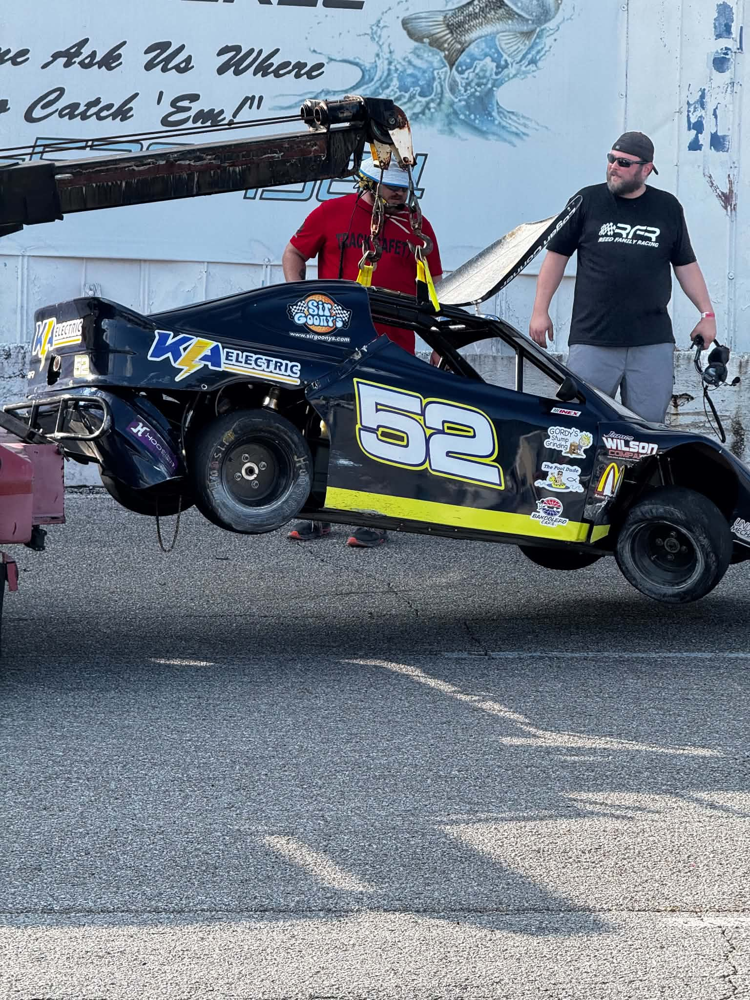
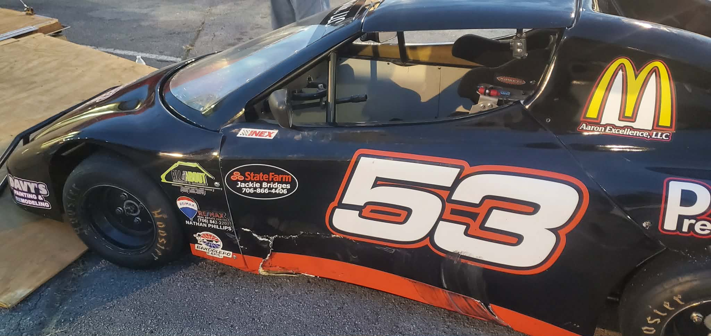

There are nights in racing when everything seems to go according to plan, and there are nights that remind you just how quickly things can change. Saturday at Huntsville Speedway was the latter.
Reed Family Racing returned to Alabama with both Bandoleros back under one trailer for the first time in nearly a month. After spending the last four weeks in Indiana for his summer visitation, TW climbed back behind the wheel of the No. 53 for the first time since Nashville. Despite the time away, there was very little evidence of rust.
From the opening practice session, TW looked comfortable in the car, posting competitive lap times while continuing to get reacquainted with the track. The team's then shifted toward helping Logan and the No. 52 find speed after struggling to match the pace of the field early in the evening. Unfortunately, those struggles reached a devastating conclusion during the second practice session.
Coming off Turn 2, Logan's car got loose and made violent contact with the outside wall. The impact launched the Bandolero into the air, spinning a full 360 degrees before crashing back onto the racing surface. The wreck destroyed components in both the right front suspension and rear end, ending the team's night before qualifying even began. "I just got loose coming off of Turn 2 and made contact with the wall and it was like the wall sucked the car right in," Logan explained afterward. "I hit it, and did a 360 and the car went up in the air while it was spinning."

Logan Conner's No. 52 sustained extensive right-front and rear-end damage after a violent crash during the second practice session.
While disappointed, Logan was already focused on learning from the incident rather than dwelling on it. "It's hard, especially for me," he said when asked about moving on from a crash like that. "I try not to think about it, but I know it's happened once, so I know it can happen again." The biggest lesson? "Commit to the line I'm going to run. I need to do a better job doing that."
Although the No. 52 suffered extensive damage, Logan remains confident the team will have the car back on track before the season concludes. "I'm 99% sure we can get it repaired. Maybe not before the next race in two weeks, but definitely before the season ends."
With one car loaded onto the trailer early, all eyes turned toward TW and the No. 53.
TW qualified sixth and lined up for the feature looking to continue knocking the rust off after nearly a month away from competition. Early in the race, contact from another competitor left visible damage along the left side of the No. 53. Fortunately, the damage proved to be more cosmetic than mechanical. "It really didn't," TW said when asked how the damage affected the handling. "The car seemed to drive the same after the contact. I had slowed down thinking the caution was out, but they never threw it."

Despite heavy damage to the left side of the No. 53, TW Reed battled through the feature and drove to a fifth-place finish.
As the feature progressed, TW began changing his approach to the corners, discovering a line that helped carry more momentum through the center and off the exit. "I realized how crucial it was to get to the wall to arc the corner better. At first I didn't feel like I did a good enough job getting close to the wall, but after a bit I changed my approach and it started working for me."
Even with the improvements, a top-five finish didn't always seem realistic. "Oh yeah," TW admitted when asked if he thought fifth was out of reach. "I thought I was driving a car that was going to be seventh at best. But between the problems with our teammate and then driving up to fourth, I started to realize we had a shot at this."
TW ultimately crossed the finish line in fifth, an encouraging result considering the time away from the driver's seat and the damage sustained during the race. More importantly, the evening provided another valuable learning experience. "I felt like I learned a lot about momentum and how it affects how I drive the car, but also how the car sits into the track throughout the corners," he said.
Asked what the team needs to improve before the next event, TW didn't hesitate. "Communication. We are still learning to communicate with each other, mostly on how to set up the car. Clearly these aren't karts, so I feel that the team has to do a better job communicating with each other, and that includes me."
One side of the trailer left Huntsville with a battered race car that will require weeks of work. The other left with a top-five finish and another notebook full of information. The results may have been different, but both drivers walked away with lessons that will make them better competitors. As the Bandolero learning curve continues, that's exactly what this season is about.